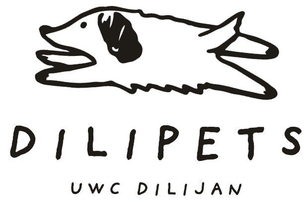

Feeding rounds
We bring food and fresh water to dogs around campus and in town, so no one goes hungry.

Full bowls, warm beds and kind hands for the dogs of Dilijan
We're a CAS service project run by students of UWC Dilijan. We feed, care for and look out for neglected and abandoned dogs in our town.
psst… click the pup to pet it. Pets so far: 0
Dilijan is a beautiful forest town in the mountains of Armenia. It is also home to many street dogs. Some were born on the street and some were left behind by their owners. Winters here are long and cold, and food can be hard to find.
Dilipets is a group of UWC Dilijan students who decided to help. We go out with food and fresh water, keep an eye on dogs who look sick or hurt, and work with local vets and residents so these dogs get the care they need.
Every dog deserves to be fed, warm and treated kindly, whether or not it has a home.
CAS stands for Creativity, Activity, Service. It's part of the IB Diploma Programme at UWC Dilijan. Students take on real, ongoing projects that make a difference in their community.
Every coin and every volunteer hour goes straight to the dogs. Here is what we do:
We bring food and fresh water to dogs around campus and in town, so no one goes hungry.
We help sick or injured dogs see a vet and pay for treatment, vaccines and sterilization.
Dilijan winters are harsh. We build and fill warm dog houses so dogs have a dry place to sleep.
We teach people about kindness to animals and help friendly dogs find loving forever homes.
Dilipets runs completely on donations. Every bit of money goes to food, vet visits and shelter for the dogs. Pick whatever way is easiest for you. Thank you so much! 🐾
Bring bags of dog food, old blankets or towels. We'll make sure they reach the dogs.
UWC Dilijan students and staff are always welcome to come along on a feeding round.
Have room in your home and heart? Reach out and we'll introduce you to a dog that needs a family.
Follow us and share our posts. Telling more people helps more dogs.
All of it goes to the dogs: food, vet bills, medicine, sterilization and winter shelter supplies. Dilipets is run by student volunteers, so nobody gets paid.
Message us on Instagram or by email with a photo and the location. Please keep a safe distance if the dog seems scared or aggressive.
Yes, sometimes! Some of the friendly dogs we look after are ready for a home. Get in touch and tell us a little about yourself.
Of course! Donating online and sharing our page helps a lot, wherever you are in the world.